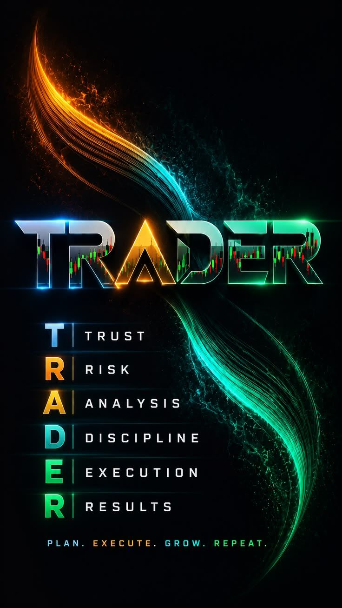

En coursFondations des marchésLEÇON
Le trading comme commerce
Comprendre l’échange entre acheteurs et vendeurs avant de chercher une opportunité.
18%du module
LEARN → PRACTICE → PROVETa progression devient visible.
Fondations des marchés
Ton inscription personnalise ton parcours et reste sur cet appareil : ton nom, ton e-mail et tes réponses ne sont jamais transmis. Une mesure d’audience anonyme (jamais ton identité) peut être utilisée pour comprendre comment les visiteurs découvrent DDA.
Vérification e-mail
Le lien de vérification est en cours de traitement.
Une progression existe déjà sur cet appareil.
Aujourd’hui dans DDA
Une étape claire pour continuer à progresser.
Cette semaine +20 XPActivité 0 jour
Mission de cette page
Choisir l’action utile d’aujourd’hui.Le Dashboard rassemble ton contexte ; il t’envoie ensuite vers une seule action, pas vers une galerie.En coursFondations des marchésLEÇON
Comprendre l’échange entre acheteurs et vendeurs avant de chercher une opportunité.
Après ta prochaine leçon, manipule une série pédagogique et transforme ton observation en preuve.
Darius Analysis Terminal · P0.4
Un espace de démonstration local pour manipuler une série historique contrôlée, annoter ton observation et la conserver sur cet appareil.
Practice Terminal · mission guidée
Sélectionne l’outil Zone S/R, puis place une zone horizontale autour de la partie centrale du graphique. Une zone est une aire d’observation, pas un prix exact.
Ton observation
Méthode DDA
Repères secondaires
Ces aperçus ne remplacent pas leurs pages dédiées. Ils t’aident à savoir quand ouvrir le Journal, le contexte de marché, les outils et les espaces encore à venir.
Contexte éditorial
Le Terminal sert à manipuler et annoter. Market Intelligence sert à lire le contexte régional et le calendrier éditorial — sans refaire le même graphique.
Journal de bord
Profil de compétences
DDA Family
Partage tes observations, compare ton raisonnement, apprends des décisions des autres apprenants DDA.
DDA Premium
Ateliers pratiques, personnalisation du parcours, continuité au-delà de M0 — la suite logique, pas une offre pressée.
Pas de boule de cristal. Une méthode, étape par étape.
Darius Free
Chaque étape se débloque après une vraie validation, jamais après une simple ouverture.
Mission de cette page
Choisir une seule prochaine validation.Le Parcours ordonne les leçons ; il ne remplace ni la pratique ni le Journal.Les modules suivent une progression pédagogique. Un module verrouillé indique un prérequis à construire, pas un échec.
Une leçon devient utile quand son exercice et son quiz confirment ce que tu as compris et appliqué.
Commence par la prochaine validation réelle. Les modules à venir restent visibles sans inventer de contenu.

Pas un raccourci. La vraie compétence se construit, preuve après preuve.
Progression
Chaque niveau ci-dessous repose sur une preuve réelle — une leçon ouverte n’est jamais comptée comme une compétence acquise.
Mission de cette page
Vérifier les preuves, pas collectionner des chiffres.Cette page mesure les validations réelles ; elle ne rédige pas ton travail à ta place.Fil de maîtrise
Preuves de pratique
DDA Skill Evidence
Parcours M0–M9
Certification
Termine ta première leçon (M0.1) pour débloquer un aperçu de certification.
L’aperçu de certification est réservé à DDA Premium.
Darius Digital Academy
a complété —
—
Maquette pédagogique — aucune certification officielle n’est délivrée pour le moment. Une émission réelle nécessitera une validation complète du parcours et une infrastructure dédiée, non encore activée.
Badges
Journal de bord
Un espace pour documenter ton processus de décision — jamais un signal, jamais un conseil d’achat ou de vente, jamais un chiffre de gain inventé. Conservé uniquement sur cet appareil.
Mission de cette page
Conserver le raisonnement pendant qu’il est encore frais.Le Journal reçoit tes observations depuis le Terminal et les transforme en trace relisible.Documente ta première analyse — ce que tu as prévu, ce que tu as fait, ce que tu en retiens.
DDA Premium
La revue hebdomadaire rassemble uniquement les observations réellement écrites dans ton Journal. Cette version locale est disponible dans la démonstration Premium.
Premium · Revue
Fenêtre locale de 7 jours
Nouvelle entrée
Préremplie depuis le Darius Analysis Terminal — relis chaque champ avant d’enregistrer.
Documente ton processus personnel — pas tes objectifs de gain. Ces réponses orientent la manière dont DDA t’accompagne, jamais ce que tu dois trader.
La suite du Journal
Ces briques seront ajoutées quand le socle d’observation sera suffisamment utilisé. Pour l’instant, ton Journal et ton Plan restent la source réelle de ton travail.
Relire les observations, les habitudes et les points à retravailler.
Revenir sur une décision pédagogique avec son contexte initial, sans réécrire l’histoire après coup.
Obtenir des questions de méthode et des pistes de révision, jamais une instruction de marché.
Bibliothèque DDA
Des ressources courtes pour comprendre, pratiquer et décider avec méthode.
Mission de cette page
Prendre un outil précis, puis retourner pratiquer.Les Ressources complètent une leçon ; elles ne deviennent pas un deuxième parcours.Rayon Free — à lire dès maintenant
Six vérifications simples pour éviter la précipitation et protéger ton processus.
Acheteur, vendeur, actif, liquidité et risque expliqués sans jargon.
Des scénarios guidés pour travailler sizing, invalidation et discipline.
Ressource DDA
Accès DDA
DDA Free pose les fondations. Premium approfondira la pratique, l’évaluation et la preuve de progression. Aucun paiement n’est activé pour le moment.
Mission de cette page
Comprendre ce qui est disponible avant de choisir un accès.Cette page explique les niveaux ; elle ne remplace ni le Parcours ni les leçons.Ce que tu as aujourd’hui
Pour démarrer sérieusement, sans rien débourser.
Ce que Premium approfondira
Pour transformer la compréhension en compétence mesurable.
Pourquoi Premium continue d’apporter de la valeur
Journal & Plan est la première brique réellement construite de cette pile ; DDA l’étoffera puis construira le reste étape par étape — jamais toutes en même temps. Statuts réels ci-dessous, pas une promesse uniforme.
DDA Family
DDA Family n’est pas un groupe de messagerie — c’est l’appartenance à l’écosystème DDA : une institution qu’on rejoint pour apprendre, partager ses observations et comparer son raisonnement avec d’autres apprenants sérieux.
Garde-fous
Market Intelligence
Un aperçu éditorial du futur cockpit DDA. Aucune donnée ci-dessous n’est connectée à une source réelle — chaque zone le précise explicitement. Cet espace couvre les étapes « Suivre les marchés » et « Revenir » de la boucle d’apprentissage DDA.
Mission de cette page
Lire un contexte régional sans le confondre avec un signal.Market Intelligence donne le cadre éditorial ; le Terminal reste l’espace où tu manipules et documentes.Tu as suivi cet espace 1 jour sur cet appareil.
Vue marché
Pourquoi cela compte
Identifier le fait, sans exagération ni prédiction.
Relier le contexte à la volatilité, au risque et au comportement.
Choisir un module dans le Parcours au lieu de chercher un signal.
BRVM — Afrique de l’Ouest
La BRVM est la bourse régionale commune aux 8 pays de l’UEMOA. DDA préparera une lecture accessible des sociétés cotées, indices, publications et notions d’investissement régional.
Exemple pédagogique
Aperçu de la mise en page qu’aura le vrai calendrier BRVM une fois une source officielle connectée. Aucune société, date ou montant réel n’est affiché.
Réfléchir / documenter
Un mouvement de marché t’interpelle ? Documente ton observation avant d’agir.
Les marchés sont mondiaux. Ton choix de broker doit rester le tien.
DDA Broker Hub
Un outil d’orientation, pas une vitrine : DDA ne recommande aucun broker, elle t’aide à comparer selon ton propre besoin. Filtre les profils ci-dessous — licences, coûts et disponibilités devront être vérifiés avant publication.
Mission de cette page
Filtrer selon ton besoin avant toute comparaison.Broker Hub informe sur les critères ; il ne transforme pas une fiche en recommandation.Comment lire une fiche
Selon ton pays, à confirmer avant toute mise en avant réelle.
Toute relation partenaire sera déclarée clairement, jamais dissimulée.
Aucune fiche n’est publiée tant qu’elle n’a pas été validée.
Réponds aux deux critères ci-dessous pour affiner l’orientation selon ton propre besoin — l’ordre d’affichage n’est jamais influencé par une commission ni par un classement commercial.
Profils
Profil pour marchés dérivés et indices synthétiques.
Profil pour Forex et CFD, sous réserve d’éligibilité locale.
Profil pour Forex et CFD, sous réserve d’éligibilité locale.
Profil pour Forex et instruments dérivés, sous réserve d’éligibilité locale.
Modifie les filtres pour afficher un autre usage.
DDA ne recommande jamais de déposer davantage, de sur-trader ou de prendre un risque inadapté. Le classement n’est jamais basé sur une commission perçue par DDA. Une éventuelle rémunération d’affiliation devra être signalée clairement avant toute activation réelle.
Centre d’aide
Ce centre d’aide prépare le support avant d’activer les canaux et notifications réels.
Mission de cette page
Résoudre un blocage précis avant de reprendre.L’Aide répond aux questions de fonctionnement ; elle ne devient pas une nouvelle page de contenu.Questions fréquentes
Pour l’instant, elle reste uniquement sur cet appareil.
Non. Aucun paiement réel n’est activé.
Non. DDA enseigne le processus, le risque et la compréhension des marchés.
Pas encore. Sans compte serveur, chaque appareil garde sa propre progression locale.
Demander de l’aide
Aucun message n’est envoyé pour l’instant — ta demande reste sur cet appareil.
Aperçu — bientôt disponible
Apprendre, échanger et progresser avec d’autres apprenants DDA — une fois cette brique activée.
Mission de cette page
Comprendre les futurs espaces d’échange, sans faux flux.La Communauté prépare les usages collectifs ; elle ne duplique ni le Marché ni le Journal.Ces espaces ne sont pas encore actifs — DDA ne simule jamais une conversation qui n’existe pas.
Le principe de construction
Les échanges seront reliés à des notions et des parcours, pas organisés autour de la recherche de signaux.
Le respect, le signalement et la protection contre les promesses irréalistes seront des prérequis.
Chaque discussion devra pouvoir conduire vers une leçon, une ressource ou une pratique vérifiable.
Ce qui existe déjà
Le laboratoire pratique déjà proposé dans Ressources Premium — sizing, invalidation, discipline.
Tes espaces réels aujourd’hui
Aucune inscription réelle — juste une préférence locale sur cet appareil.
Aperçu — bientôt disponible
Des outils pour analyser tes décisions plus finement — une fois cette brique activée.
Mission de cette page
Prolonger une compétence déjà observée.La Pratique avancée sera l’espace de replay et de feedback ; aujourd’hui, le Journal reste la preuve active.Ces outils ne sont pas encore actifs — DDA ne simule jamais une analyse ou un score qu’il n’a pas réellement calculé.
La mesure qui compte
Identifier la structure observée avant de formuler une hypothèse.
Décrire ce qui ferait changer d’avis, au lieu de défendre un scénario.
Vérifier la cohérence avec un plan déclaré, sans score de rentabilité fictif.
Ce qui existe déjà
La base réelle sur laquelle ces outils s’appuieront : documenter chaque décision, une par une.
Tes statistiques réelles aujourd’hui
Aucune inscription réelle — juste une préférence locale sur cet appareil.
Aperçu — bientôt disponible
Un accompagnement plus personnalisé, pensé pour s’appuyer sur ce que tu construis déjà — jamais pour le remplacer.
Mission de cette page
Recevoir un jour une aide qui explique, jamais qui décide.Intelligence DDA prépare l’assistance pédagogique ; elle ne remplace pas tes validations.Rien ici n’est actif — DDA ne fait jamais parler une IA qui n’existe pas encore.
La règle DDA AI
Reformuler une notion, expliquer une erreur, proposer une révision bornée et relier une faiblesse à une activité du parcours.
Donner un signal, prédire un actif, exécuter une transaction ou présenter un score pédagogique comme un diagnostic financier.
Ce qui existe déjà
Chaque étape se débloque selon ta propre progression réelle — jamais un algorithme, juste ta validation.
Aucune inscription réelle — juste une préférence locale sur cet appareil.
Espace personnel
Modifie uniquement ce qui aide DDA à te proposer la prochaine étape utile.
Mission de cette page
Ajuster ton environnement, pas refaire ton parcours.Le Profil garde tes préférences locales ; ta progression détaillée vit dans Progression.Commence l’inscription pour créer ton premier parcours.
Préparation de ton parcours…
DDA Premium
Aucun achat ni paiement réel n’est proposé ici.